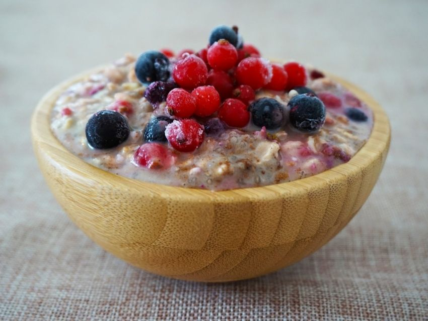

Bowl de Yogur Griego, Avena y Frutas

Este bowl es tu salvavidas cuando no tienes tiempo pero no quieres caer en un desayuno bomba. En esta receta, combinamos yogur griego 0% que es puro proteína, avena que te da fibra y frutas frescas que te dan azúcar natural, creando una mezcla cremosa, crujiente y dulce que parece postre pero es 100% fitness. Además, lo puedes dejar listo la noche anterior y llevarlo al trabajo.